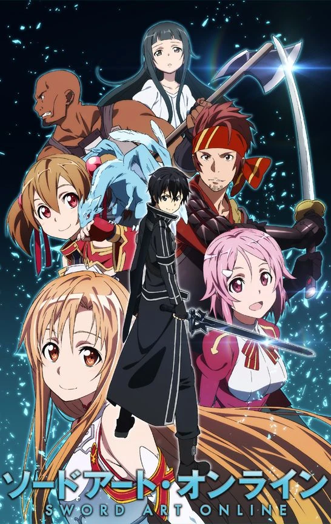

Sword Art Online
Escapar es imposible hasta terminar el juego; un game over significaría una verdadera "muerte". Sin saber la "verdad" de la siguiente generación del Multijugador Masivo Online, 'Sword Art Online(SAO)', con 10 mil usuarios unidos juntos abriendo las cortinas para esta cruel batalla a muerte. Participando solo en SAO, el protagonista Kirito ha aceptado inmediatamente la "verdad" de este MMO. Y, en el mundo del juego, un gigante castillo flotante llamado 'Aincrad', Kirito se distinguió a si mismo como un jugador solitario. Apuntando a terminar el juego al alcanzar la planta mas alta el solo continua avanzando arriesgadamente hasta que recibe una invitación a la fuerza de una guerrera y esgrimista experta, Asuna, con la cual tendra que hacer equipo.

Date a live
Itsuka Shidou es un estudiante de instituto que, durante las vacaciones, vive en primera persona un suceso sin igual. Ante él aparece una chica con armadura, que destruye la ciudad que tiene delante. La chica responde ante el nombre de Tooka, y según la hermana de Shidou, es un espíritu os cuales causaron un terremoto espacio-temporal 30 años atrás. La hermana de Shidou revela que su verdadera identidad es la de la líder de la organización Ratatosk y le cuenta a Shidou que la única manera que tienen de salvar el mundo es hacer que Tooka se acabe enamorando de él y tengan una cita.

Boku no Kokoro no Yabai Yatsu
Kyotaro Ichikawa puede parecer el típico estudiante de secundaria, pero en su corazón sueña con el asesinato. Por ello, no es de extrañar que la persona que más desea matar nunca esté lejos de su mente: la ídolo de la clase, Anna Yamada. Leyendo a solas en la biblioteca de su querida escuela, empieza a encontrarse sin querer con Yamada, que viene a atiborrarse en secreto de sus queridos caramelos y dulces. A través de sus interacciones, Ichikawa descubre lo tonta que es Yamada, y no puede evitar apoyarla desde la barrera. Mientras tanto, la propia Yamada no puede evitar burlarse implacablemente de Ichikawa debido a sus reacciones atolondradas. Gracias a una serie de interacciones cotidianas muy conmovedoras, el vínculo distante entre ambos se convierte en algo más que simples conocidos de biblioteca. Tal vez, con el tiempo, Ichikawa llegue a darse cuenta de que sus deseos asesinos se han convertido en algo totalmente distinto.

Tokyo Ghoul
Extraños asesinatos se están sucediendo uno tras otro en Tokyo. Debido a las pruebas encontradas en las escenas, la policía concluye que los ataques son obra de ghouls que se comen a las personas. Kaneki y Hide, dos compañeros de clase, llegan a la conclusión de que si nadie ha visto nunca a esos necrófagos es porque toman la apariencia de seres humanos para ocultarse. Poco sabían entonces de que su teoría sería más cierta de lo que pensaban cuando Kaneki es herido de gravedad por un monstruo y comienza a atraerle cada vez más la carne humana…

Toradora
Takasu Ryuuji comienza su segundo año de instituto con mucho animo. Sin embargo, hay una cosa que el odia, y es su mirada, heredada de su padre (un ganster), con lo cual posee una habilidad innata para intimidar a los demás, provocándole esto muchos malentendidos con sus compañeros, no obstante, todo esto va cambiar el primer día de clases, cuando Ryuuji tiene un encontronazo con Aisaka Taiga, la persona mas peligrosa del centro.

Zero No Tsukaima
La trama se desarrolla en un mundo donde existe la magia y existe algo de desigualdad social entre la gente que puede realizar magia y la que no, este mundo se asemeja mucho al mapa Europeo por la zona de Inglaterra, Francia, España, Alemania... en el mismo se aprecia que no existe tecnología sobresaliente más allá del siglo XIX. La gente se transporta a caballo, carrozas y en unos extraños barcos que vuelan.Hay seres mitológicos como duendes, elfos, dragones, ogros y por supuesto magos los cuales pueden manejar diferentes elementos (el fuego, el agua, el viento y la tierra). Nuestra protagonista es una maga de nombre Louise Françoise Le Blanc de La Vallière, también llamada por sus compañeros en la academia de magia "Louise la Cero", debido a que ella no es capaz de realizar algún hechizo sin que pase algo.

Overlord
La historia da comienzo cuando Yggdrasil, un popular juego online, es cerrado un día sin previo aviso. Sin embargo, el protagonista, Momonga, decide no salir del juego. Momonga así se transforma y se convierte en “el mago más poderoso”. El mundo sigue cambiando con él dentro, y los NPCs comienzan a sentir emociones. Sin familia, amigos ni lugar en la sociedad, Momonga tendrá que luchar por adaptarse al nuevo mundo en el que se ha convertido el juego.

Eighty-Six 86
La historia se sitúa en un entorno bélico el cual es protagonizado por una feroz batalla entre dos bandos, el imperio y la república. Ambos bandos cuentan con lideres altamente capacitados los cuales tendrán que idear el mejor de los planes para derrotar a su enemigo.

Shakugan no Shana
Sakai Yuuji, estudiante de secundaria del instituto Misaki, quien llevaba una vida normal, se ve en serios aprietos cuando se ve atrapado en una batalla contra un "Guze no Tomogara", seres devoradores de almas, sin embargo es salvado dramáticamente por una "Neblina de Llama" llamada "La cazadora de ojos y pelo ardientes" que le cambia por completo su vida cuando el chico se entera que ya había muerto? su "yo" ya había sido devorado, que él era una "antorcha", los restos de su alma, y que iba a desaparecer sin dejar rastro. En ese momento entabla una complicada relación con aquella chica a quien él osadamente llamó Shana. Ella se ve obligada a proteger al chico cuando se enteran que éste es un "Mistes", una "antorcha" única que encierra un tesoro en su interior, de ahí comienza una difícil batalla contra los "Guze no Tomogara" por proteger el tesoro que carga Yuuji y la ciudad en la que todos viven de una devastación casi inminente, mientras tanto Shana no sabe como arreglárselas para encajar en la vida del estudiante de secundaria...

Hidan no Aria
La historia toma lugar en Tokyo Butei High School, una escuela especial en donde detectives armados llamados "Butei" son entrenados en el uso de sus armas y habilidades. Kinji Tooyama es un estudiante de segundo año que tiene una habilidad especial, pero la mantiene en secreto y se muestra como alguien normal ya que quiere una vida pacífica. Un día, de camino a la escuela, mientras viaja en su bicicleta con una bomba, se encuentra con H. Aria Kanzaki, la más poderosa Butei de Rango "S" del la seccional de Asalto de la escuela

Fate Stay Night
Cada 10 años se lleva acabo un ritual, una guerra entre 7 magos escogidos por una fuerza omnipotente, cuyo objetivo es invocar el "Santo Grial" y que este le conceda al vencedor un unico deseo que sera realizado sin importar lo que se pida. Para luchar los magos seran provistos de un Sirviente (Servant) que es un Espiritu Heroico (Espiritus que en vida fueron grandes Heroes) invocado unicamentre gracias al poder del Santo Grial. Shiro Emiya fue salvado de un inmenso incendio 10 años atras por un mago llamado Kiritsugi Emiya, posee muy poco talento para la magia pero se ve involucrado en la nueva guerra y su servant es invocado de manera poco convencional, confundido, decide participar de la lucha con la determiancion de detener esta locura como de lugar, su servant es abrumadora, elegante y muy noble, se enamora inevitablemente, durante las luchas el determinara el destino de esta especial mujer.

Kanojo mo Kanojo
Después de albergar un amor no correspondido por varios años, Naoya Mukai finalmente obtiene una cita con su amiga de la infancia, Saki Saki. Sin embargo, justo cuando intenta comprometerse con esta relación, recibe una abrupta confesión por parte de Nagisa Minase. Al principio, Naoya intenta rechazarla pero pronto se ve abrumado por los sentimientos de no querer herirla. Tratando de evitar traicionar la confianza de su novia en él, Naoya piensa en una “solución” para hacer felices a ambas: salir con las dos. Naturalmente, Saki rechaza la idea, pero a través de la persistencia de Naoya y Nagisa, termina aceptando. Con esto, comienza un romance de tres integrantes entre Naoya, su novia y su otra novia, que de entrada ya tienen una relación que se desvía de la norma social.

Sword Art Online: Progressive
“No hay forma de superar este juego. La única diferencia es cuándo y dónde mueres…” Ha pasado un mes desde que comenzó el juego mortal de Akihiko Kayaba, y el recuento de cadáveres sigue aumentando. Ya han muerto dos mil jugadores. Kirito y Asuna son dos personas muy diferentes, pero ambos desean luchar solos. Sin embargo, se ven arrastrados a enfrentarse juntos a los desafíos de dentro y de fuera. Dado que todo el mundo virtual en el que viven ha sido creado como una trampa mortal, los jugadores supervivientes de Sword Art Online están empezando a desesperarse, y la desesperación los hace peligrosos para los solitarios como Kirito y Asuna. A medida que se hace evidente que la soledad equivale al suicidio, ¿podrán ambos superar sus diferencias para encontrar la fuerza necesaria para creer el uno en el otro, y así sobrevivir? Sword Art Online: Progressive es una nueva versión de la historia de Sword Art Online que comienza en el principio de la épica aventura de Kirito y Asuna, ¡en el primer nivel del mortífero mundo de Aincrad!